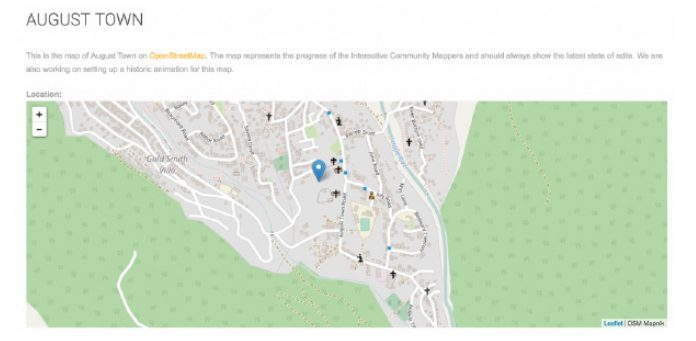
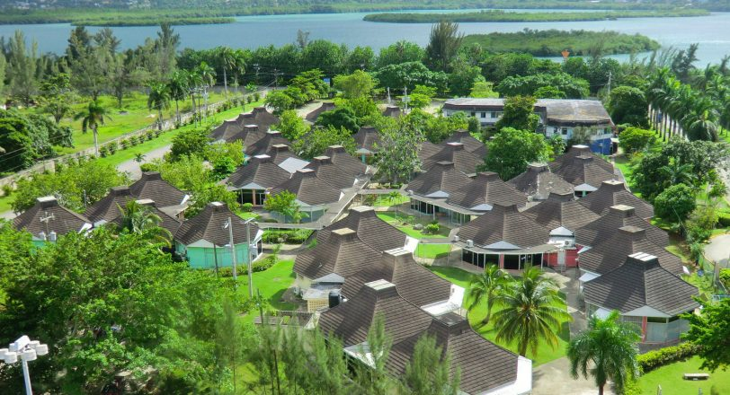

مانند بسیاری از کشورهای حوزه کاراییب، اقتصاد جامائیکا نیز بهشدت وابسته به سلامت بخش گردشگری آن است.
گردشگران، تحت تأثیر افزایش استراحتگاههای دارای تعرفه جامع - که یک عامل بازدارنده برای گردشگران شده است تا از مناطق پرترافیک دور بمانند - بهندرت فرهنگ منحصربهفرد جامائیکا را تجربه میکنند و منافع اقتصادی گردشگری معمولاً بسیار متمرکز هستند. بهمنظور نشان دادن پتانسیل افزایش گردشگری (و گسترش مزایای اقتصادی آن)، یک پروژه ترسیم نقشه جامعه که در نوامبر ۲۰۱۵ آغاز شد، به دنبال ترکیب داده حاکمیتی باز با داده ترسیم نقشه جمعسپاری شده بود تا توسعه مشارکتی بخش گردشگری را ممکن سازد. این اقدام که حول داده گردشگری باز و تلاشهای سازمانهای دولتی، سازمانهای جامعه مدنی، توسعهدهندگان و گروهی از نقشهبرداران اجتماعی با انگیزه ساختهشده است، بینش اولیه در مورد اینکه چگونه دادهها و هوش جمعی میتوانند بر صنعتی تأثیر بگذارند که به روشهای مختلف، رگ حیاتی کشور را نشان میدهد، فراهم میکند.
پیشینه و زمینه
تمرکز بر مسئله / زمینه کشور
جاماییکا یک کشور جزیرهای کوچک است که در ۶۰۰ مایلی میامی و ۱۰۰ مایلی جنوب کوبا واقعشده است. این کشور عضو اتحادیه کشورهای مشترکالمنافع بریتانیا است و روابط اقتصادی نزدیکی با ایالاتمتحده دارد. این کشور استقلال خود را در سال ۱۹۶۲ در دوران استعمارزدایی جهانی به دست آورد و هنوز هم با میراث سیاسی، اقتصادی و اجتماعی باقیمانده از استعمار دستوپنجه نرم میکند.
منطقه کارائیب همچنان بستر داغ فعالیت گردشگری است. از سال ۲۰۰۵ تا ۲۰۱۳، ورود گردشگران به منطقه کارائیب، ۵.۴ درصد رشد داشته و از میانگین نرخ رشد جهانی (۴.۷ درصد) پیشی گرفته است. در سال ۲۰۱۴، دریای کارائیب بهطورکلی ۲۶.۳ میلیون سفر دریافت کرد (رکورد قبلی یعنی ۱.۳ میلیون در سال ۲۰۱۳ را شکست). این سطح از فعالیت گردشگری، ۲.۳ درصد از کل ورود گردشگران جهانی را نشان میدهد. کارائیب همچنین مقصد شماره یک سفرهای دریایی در جهان است.
اقتصاد جامائیکا، مشابه اقتصاد کل منطقه کارائیب، بهشدت به صنایع خدماتی وابسته است که طبق برخی برآوردها، ۷۰ درصد از تولید ناخالص داخلی این کشور را تشکیل میدهد. بیشتر این خدمات مربوط به بخش گردشگری است که یکی از نقاط قوت اقتصادی کشور است. بر اساس آمار جامائیکا، بیش از ۳ میلیون توریست در سال ۲۰۱۴ از این جزیره بازدید کردند که شامل گردشگران کشتیهای تفریحی نیز میشد. جامائیکا رشد سالبهسال را در سالهای اخیر تجربه کرده است - افزایش ۳.۶ درصدی بازدیدکنندگان توقفگاهی از سال ۲۰۱۳ تا ۲۰۱۴ و افزایش ۱۲.۵ درصدی بازدیدکنندگان کشتی کروز در مدت مشابه داشته، که این روند قابلتوجه از سال ۲۰۰۷ ادامه دارد.
درحالیکه بخش گردشگری به نظر سالم میرسد و بهسرعت در حال تکامل است، ضرورت نیاز به یک مدل جامعتر برای توسعه گردشگری بهطور گسترده احساس میشود، همچنین نیاز به یک سیستم هوشمندتر و متمرکز برای جمعآوری و مدیریت دادههای گردشگری است.
مدل گردشگری همهجانبه
طی چند دهه گذشته، گردشگری در منطقه کارائیب تحت تأثیر افزایش پیشنهادهای گردشگری همهجانبه قرار گرفته است. مثال پارادایمی این مدل یک تفریحگاه ساحلی مرکزی است که در کنار سایر خدمات، بستههای خوراکی و نوشیدنی را برای بازدیدکنندگان فراهم میکند و اطمینان حاصل میکند که مصرفکنندگان به هر دلیلی مجبور به ترک این تفریحگاه نیستند. این استراحتگاهها تمایل به توجه به تصورات قبلی مسافران در مورد فرهنگ و زندگی جامائیکا دارند - بهعنوانمثال، تعداد نسبتاً کمی از بازدیدکنندگان کینگستون را فراتر از مناظری که از یک تور یکروزه اتوبوس دیده میشود، کاوش کردهاند. هدف انجمن توسعه شهر ترنچ، که یک ابتکار مردمی است، کمک به بازدیدکنندگان برای تجربه محله معروف ترنچ در همسایگی کینگستون - خانه «باب مارلی»، و محل تولد موسیقی راکاندرول با ارائه یک راهنمای تور محلی با عنوان «یک موزه، یک استودیوی موسیقی، و یک مدرسه، و همچنین تعامل با هنرمندان، صنعتگران و بزرگان جامعه» است». اگرچه هنوز هم نسبت به خشونتهای درونشهری کینگستون محتاط هستند، اما امروزه بازدیدکنندگان نسبت به گذشته احتمال بیشتری برای تعامل با جوامع محلی دارند که ثابتشده است در مواجهه با خشونت و فقر تابآور هستند.
کریستوفر ویمز-استون از انجمن توسعه شهر ترنچ استدلال میکند که درحالیکه مزایای زیادی برای مدل گردشگری همهجانبه وجود دارد، «این برای یک کشور کسرشأن است که بگوید این مدل را تحتفشار قرار خواهد داد، زیرا جرم در کشور بسیار بالا است و ما نمیتوانیم به بازدیدکنندگان اجازه خروج دهیم....جای تعجب نیست که ما هنوز در جاماییکا، مشکلات جنایت را حل نکردهایم … این قویترین کلمهای است که من استفاده خواهم کرد - تنبلی. این سادهترین - و نه شرافتمندانهترین راه - برای رهایی خود را از این معضل است». ویمز-استون دقت میکند که به این نکته اشاره کند که این مدل همهجانبه مزایای بسیار واقعی برای جامائیکا دارد - از جمله این واقعیت که بسیاری از مردم جامائیکا توسط چنین استراحتگاههایی استخدام میشوند و بسیاری از بازدیدکنندگان انجمن توسعه شهر «ترنچ» در استراحتگاههای فراگیر برای بیشتر مدت اقامت خود مستقر هستند. او بهجای اینکه رویکرد جامع را اهریمنی جلوه دهد، استدلال میکند که گردشگران و شهروندان جامائیکا از تلاشهای اضافی برای پیشبرد اقدامات گردشگری جامعهمحور بهجای تکیه محض بر مدل همهجانبه سود میبرند.
گردشگری و اطلاعات
محوریت گردشگری در اقتصاد محلی، چالشهای مختلفی را برای سیاستگذاران و صاحبان کسبوکار در جامائیکا و سراسر دریای کارائیب، بهویژه به دلیل نوسان و عدم اطمینان ورود گردشگران، ایجاد میکند. اخیراً، نیاز به اطلاعات بیشتر نمایان شده است، برای مثال ارائه اطلاعات بیشتر برای کمک به مقامات گردشگری جامائیکا که پیشنهادهای خود را برنامهریزی میکنند و همچنین برای خود گردشگران که امکانات پیشنهادات را بهتر درک کنند (بهخصوص امکانات فراتر از استراحتگاه فراگیر).
اطلاعات بهتر بهعنوان کلیدی برای باز کردن فعالیتها و مناطق توریستی جدید در نظر گرفته میشود. بهعنوانمثال، درصورتیکه اطلاعاتی در مورد فرهنگ، تاریخ و مردم منحصربهفرد منطقه بهراحتی در دسترس باشد، بیشتر ممکن است یک گردشگر در تور اجتماعی محله کینگستون شرکت کند. بهطور مشابه، اگر یک کارآفرین محلی به دادههایی که جزئیات علایق و فعالیتهای گردشگرانی را که از منطقه بازدید میکنند دسترسی داشته باشد، تصمیمات آگاهانهتری میگیرد. بانک توسعه بینآمریکا به «فقدان بزرگ دادهها برای معیار [گردشگری] و برنامهریزی استراتژیک در منطقه» اشاره میکند و استدلال میکند که «استفاده مؤثر از دادههای بزرگ پتانسیل تغییر بخش گردشگری را دارد که موج جدیدی از رشد بهرهوری و مازاد مصرفکننده را ارائه میدهد». به این ترتیب، توسعه «سیاست عمومی برای ترویج اثرات خارجی مثبت مانند اشتراک دانش و رسیدگی به نارساییهای هماهنگی بهطوری که بخش خصوصی تشویق به نوآوری و ارتقاء با هدف کارایی جمعی شود» را توصیه میکند».
داده باز در جامائیکا
داده باز میتواند در ایجاد اطلاعات ضروری حیاتی باشد. مطالعه اخیر انجامشده توسط موسسه تحقیقات سیاست کارائیب (CaPRI) به این نتیجه رسید که طرح داده باز در جامائیکا میتواند بهرهوری در صنعت گردشگری را تا ۱۰ درصد بهبود بخشد. جامائیکا بهخوبی از این پتانسیل (و نیاز به اطلاعات بهتر) آگاه است و صراحت خود را نسبت به سیاستها و چارچوبهای داده باز نشان داده است.
در سال ۲۰۱۴، دولت جامائیکا با بانک جهانی همکاری کرد تا چارچوبی را برای «توسعه داده باز بهعنوان یک گزینه ایجاد شغل و کارآفرینی» ایجاد کند. این نظر بانک جهانی است که جامائیکا «بسیاری از پیشنیازهای ضروری موردنیاز برای حمایت از یک برنامه موفق» و همچنین «پرجنبوجوشترین جامعه مردمی که میتوانند از داده استفاده کنند» را دارد.
موریس مک نافتون، مدیر موسسه باز کارائیب (COI) - ائتلافی که توسعه باز را ترویج میکند - معتقد است که درحالیکه منطقه کارائیب بهطورکلی «دیر به داده باز، حزب دولت باز» رسیده است، فضای داده باز جامائیکا به چند جهت قابلتوجه است. بهعنوانمثال، او اشاره میکند که «برخلاف بسیاری از نمونههای مشهور که با همکاری دولتها شروع به انتشار بسیاری از دادهها و سپس تلاش برای شبیهسازی فعالیت حول آن کردهاند، ما درواقع از دیدگاه سمت تقاضا در تعدادی از بخشهای کلیدی شروع کردهایم و در حال کار برای شناسایی مؤثرترین منابع داده هستیم». او ادامه میدهد: «از نظر تقاضا، ظرفیت کاربر و علاقه به داده باز بسیار بالا است. در واقع، از نظر ارزیابی آمادگی کلی بانک جهانی، بالاترین رتبه را در بین ۷ رکن برآورد کرد».
این باور که صنعت گردشگری کارائیب و جامائیکا میتواند از افزایش فعالیت داده باز سود ببرد، منجر به دسترسی بیشتر به اطلاعات میشود.
نقشه تعاملی جامعه (ICM)

http://icm.msbm-uwi.org/content/august-town
نقشه جامعه نقشهای است که توسط شهروندان یک منطقه خاص تهیه شده است. این نقشه شامل دانش و تخصص محلی است و توسط برخی بهعنوان یک پاسخ دموکراتیکتر و مردممحور به نقشهنگاری سنتی دیده میشود. تغییرات در نقشهنگاری سنتی در سالهای اخیر توسط دو نیروی اصلی هدایت شده است: ۱) ظهور جغرافیدانان انتقادی که «نقش حیاتی و اساسی نقشه را در شکل دادن به جهان» و رابطه آن با قدرت را روشن کردند، و ۲)ظهور داده با دسترسی آزاد و فنآوریهای نقشهبرداری در دسترس. اکثر پروژههای نقشهبرداری جامعه در زمینههای درحالتوسعه کشور یافت میشوند.
نقشههای جامعه تعاملی چندین مزیت دارند؛ مانند بسیاری از پروژههای اطلاعات اجتماعی، آنها اساساً بر داده باز متکی هستند. مهمترین مزیت آنها این واقعیت است که آنها تمایل دارند سریعتر ترسیم شوند، پویاتر باشند، هزینه کمتری برای تولید داشته باشند و اطلاعات دقیقتری را فراهم میکنند. پروژههای نقشه موفق باید بهدقت، ویژگیهای یک جامعه نقشهبرداری شده (و همچنین دسترسی آن جامعه به نقشه نهایی، بهویژه در محلههای فقیرتر و حاشیهنشین)؛ وجود فعالان جامعه مدنی که بتوانند از نقشهها در کارزارهای عمومی و فشار فعالان استفاده کنند؛ و مقامات دولتی که به جامعه در حال نقشهبرداری خدمات میدهند (با توجه به گنجاندن اولویتها و نیازهای خود در پروژه نقشهبرداری) را باید در نظر بگیرند.
نمونههای متعددی از ICM ها در زمینههای کشورهای درحالتوسعه وجود دارد. تلاشهای ICM برای حمایت جامعهمحور (بهعنوانمثال، در نایروبی)، و در پاسخ به بحرانهای سلامت عمومی (سیرا لئونه) یا بلایای طبیعی و دیگر بلایا (بهعنوانمثال، خلیج مکزیک، هائیتی) مورداستفاده قرار گرفتهاند. جنیفر شکباتور، محقق مرکز بینرشتهای هرزلیا - یک دانشگاه تحقیقاتی اسرائیلی - خاطرنشان میکند که شیوع دستگاههای مدیریت کیفیت فراگیر در زمینههایی مانند واکنش به بلایا تعجبآور نیست. تلاشهای ICM اغلب در چنین شرایطی موفقیتآمیز هستند، زیرا «انگیزهها وجود دارند، شما مجبور نیستید مردم را تشویق کنید. مردم میدانند که باید آنجا باشند». ICM در شرایط کمتر اضطراری، بدون مشوقهای واضح برای مشارکت، بسیار سختتر است.
فعالان کلیدی
ارائهدهندگان دادههای کلیدی
صنعت گردشگری جامائیکا توسط وزارت گردشگری اداره میشود که اطلاعات مربوط به تعداد بازدیدکنندگانی که وارد کشور میشوند و محل اقامت آنها را حفظ میکند. نقشهبرداران محلی نیز دادهها را به روش جمعسپاری ارائه میکنند تا منابع دادههای رسمی را با اطلاعات واقعی و عملی تکمیل کنند.
کاربران و واسطههای داده کلیدی
مؤسسه باز کارائیب (COI) نقشآفرین اصلی تلاش ICM در شهر آگوست بود. COI یک «ائتلاف منطقهای از افراد و سازمانهایی است که رویکردهای توسعه باز را برای شمول، مشارکت و نوآوری در منطقه کارائیب با استفاده از داده باز بهعنوان یک کاتالیزور ترویج میکنند». حوزههای تمرکز آن شامل «آگاهی، حمایت و تعامل با ذینفعان بخش عمومی در دولت باز و داده باز» و «تسریع ایجاد ظرفیت منطقهای در مجموعه اصلی پلتفرمهای فنآوری، ابزارها و استانداردهایی است که معمولاً در سراسر جهان داده باز مورداستفاده قرار میگیرند». COI همچنین نقش کلیدی در تلاشهای منطقهای مانند کنفرانس دادههای باز توسعه کارائیب و کد اسپرینت (Codesprint) ایفا میکند.
موریس مک نافتون از COI اشاره میکند که «ما در مورد انتخاب بخشهایی که تأثیر زیادی برای حوزه کارائیب دارند، بسیار دقیق عمل کردهایم». در نتیجه، اقدامات COI بر روی بخشهای کشاورزی، گردشگری و مناطق حفاظتشده دریایی تمرکز دارد.
ذینفعان کلیدی
تلاش ICM به معنای سود بردن از طیف گستردهای از فعالان، از جمله خود گردشگران، ذینفعان در صنعت گردشگری محلی و بهطورکلی کشور است که از مزایای اقتصادی یک صنعت گردشگری بسیار پراکنده بهره میبرد. میشل مکلئود، موریس مک ناتون، گردانندگان طرح، در مقالهای که پروژه آزمایشی اولیه را در اینجا توصیف میکند، به ذینفعانی مانند ساکنان جامعه اشاره میکنند. کسبوکارهای گردشگری (به منظور بهبود مهارتهای فنآوری و سواد دادهای کسبوکارهای گردشگری برای توسعه محصولات و خدمات نوآورانه گردشگری)؛ سرویس میزبانی UWI مونا سورس (که «نماد تبدیل شدن به مرکزی برای داده باز و فعالیتهای ICM است»)؛ کمیسیون توسعه اجتماعی (یک آژانس دولتی که نقشی کلیدی در مقیاسبندی تلاشهای ICM گردشگری و دستیابی به ابزارهای جدید نقشهبرداری بازی میکند)؛ و توسعهدهندگان برنامه گردشگری که برای دسترسی به نقشههای جدید مفید و فرصتهای همکاری جدید بالقوه با سایر ذینفعان در این فضا هستند.
شرح پروژه
ازآنجاکه پتانسیل تلاشهای ترسیم نقشه جمعسپاری شده (اغلب اما نه همیشه با مجموعه داده حاکمیتی باز تکمیل میشود) همچنان به رشد خود ادامه میدهد، بهعنوان یک عامل مهم گردشگری جامعه دیده میشود که «یک جزء کلیدی طرح اصلی گردشگری جامائیکا و تلاشها برای تنوع بخشیدن به محصول گردشگری است». در سال ۲۰۱۵، موریس مک نافتون و میشل مک لئود از دانشگاه هند غربی و موسسه باز کاراییب (COI) یک اقدام ICM متمرکز بر گردشگری را آغاز کردند. هدف این پروژه استفاده از داده باز و تلاش ICM جمعسپاری شده برای ایجاد ابزارهای ترسیم نقشه گردشگریمحور و ایجاد مهارتهای جدید ترسیم نقشه برای اعضای جامعه بود. این ابتکار عمل برای برجسته کردن «میراث، فرهنگ، بومشناسی و تعامل بین جامعه و بازدیدکننده» به روشی توسعه یافت که جامعه را قادر ساخت تا «دادههای خود و هوش خود را بر اساس دانش بومی خود تولید کند».
همانطور که مک نافتون آن را در یک مقاله مطرح کرد، اساس این ابتکار این باور بود که:
ترکیب اینترنت و فنآوریهای جدید کمهزینه، تعاملی، مبتنی بر نقشه با داده رسمی دولت باز و محتوای بومی فرصتی را برای مشارکت فعال اعضای جامعه در برنامهریزی، توسعه و افزایش قابلیت مشاهده محصول گردشگری جامعه ایجاد میکند و همچنین تعامل بین جامعه، آژانسهای گردشگری و دیگر ارائهدهندگان خدمات در این بخش بهعنوانمثال، حملونقل، هتلهای زنجیرهای بزرگتر، اپراتورهای تور و گردشگران آینده را افزایش میدهد.
برای ایجاد زمینه برای تلاش ICM، تیمی از COI یک مطالعه ناحیهای دقیق انجام داد و به مجموعه دادههای اصلی مورداستفاده در پنج کشور که بخشهای گردشگری مهمی داشتند، نگاه کرد. این تلاش به دنبال به دست آوردن درک بیشتری از جنبههای عرضه و تقاضای اکوسیستم داده باز گردشگری، کاربران فعلی و بالقوه چنین دادههایی و جایی که بیشتر این مجموعه دادهها در طیف بسته-باز وجود داشتند، بود. این تیم دریافت که درحالیکه در برخی موارد داده کاملاً باز نیست، «فعالیت زیادی هم از نظر طرف تقاضا و هم از نظر طرف عرضه در بخش گردشگری» وجود دارد و مجموعه دادههای موجود «برای اتخاذ تصمیمات استراتژیک مهم در این بخش مورداستفاده قرار میگیرند». بهعنوانمثال، مک لئود در مصاحبهای به استفاده باربادوس از داده ورودی گردشگری برای دسترسی هدفمند به خطوط هوایی جدید که میتواند از خدمات جزیره بهرهمند شود و سیاستهای رشد خطوط هوایی را تنظیم کند، اشاره کرد. او استدلال میکند که مورد باربادوس تنها یک مثال از این است که «باز بودن داده گردشگری برای تصمیمگیری بهموقع و تنظیمات استراتژیک در این بخش حیاتی است».
پسازاین تلاشهای تحقیقاتی اولیه، پروژه آزمایشی ICM که توسط مکلئود و مک نافتون انجام شد، در طول نشست اولیه در ژوئن ۲۰۱۶ با شرکای مرکز تحقیقات گردشگری و سیاستگذاری خدمات اجتماعی مونا - یک سازمان غیردولتی توسعه اجتماعی و اقتصادی – و منبع – یک مرکز منابع محلی - بهطورجدی آغاز شد. هدف شناسایی نقشهبرداران بالقوه برای شرکت در پروژه بود. جلسه اولیه با یک «کارگاه فشرده ۵ روزه» دنبال شد که در آن نقشهبرداران داوطلب در مورد قابلیتهای دادههای جغرافیایی و بهویژه استفاده از پلتفرم OpenStreetMap آموزش دیدند. پس از اتمام کارگاه، نقشهبرداران شرکتکننده در تیمهایی قرار گرفتند و در مناطق مختلف شبکه در سراسر شهر آگوست تاون - محلهای در کینگستون - منصوب شدند. در طول یک دوره چهارهفتهای، شرکتکنندگان آثار دیدنی و نواحی موردعلاقه، مسیرهای تور و ایستگاههای اتوبوس را نقشهبرداری کردند. آنها همچنین تصاویر و ویدیوهایی را برای گنجاندن در مصنوعات نقشهبرداری که در دسترس عموم قرار داشتند، جمعآوری کردند.
طرح ICM با هدف دستیابی به چهار هدف اصلی توسعه یافت. ابتدا، نقاط موردعلاقه و داراییهای جامعه را در کینگستون و سنت اندرو ترسیم شد. دوم، به دنبال فراهم کردن دادهها و اطلاعات مفید برای ذینفعان فعال در بخش گردشگری جامائیکا بود. سوم، به دنبال ایجاد زمینهای برای ترسیم نقشه جامعه آینده و فعالیتهای گردشگری جامعهمحور بود. در نهایت، این تلاش به دنبال فراهم کردن مهارتهای جدید و فرصتهای کارآفرینی برای اعضای جامعه شرکتکننده در طرح نقشهبرداری بود. اولین خروجی این طرح یک برنامه کاربردی همراه تور مجازی آگوست تاون بود که نقشهها و پیشنهادهای داده محور و جامعهمحور را برای ایجاد بیشترین بازدید از منطقه فراهم میکرد.
یک اقدام پیگیری به مدت کوتاهی پسازآن سازماندهی شد و تعدادی از رهبران جامعه را علاوه بر شرکای استراتژیک و نقشهبردارها گرد هم آورد. این گروه متمرکز دوم «لیست آرزوهای مرتبط با گردشگری» را ارائه کرد که به هدف قرار دادن بهتر تلاشهای نقشهبرداران جامعه کمک کرد. برخی از موارد لیست آرزوها شامل جشنوارههای غذایی، امکانات ورزشی جوانان و راهنمایان تور محلی میشود. دو پروژه آزمایشی اولیه نقشهبرداری تعدادی از نقشههای دیجیتال و مسیرهای گردشگری را به همراه داشت که در زیر با جزئیات بیشتر توضیح داده شدهاند.
تقاضا و عرضه نوع داده (ها)و منابع
با توجه به سایت سرشماری بنیاد دانش باز کارائیب، تعدادی از مجموعه داده باز مربوط به گردشگری در دسترس هستند (حتی اگر برخی از دادهها با تعریف دقیق، واقعاً «باز» نباشند). برخی از این مجموعه دادهها عبارتند از: ورود گردشگران («مجموع دادههای مربوط به بازدیدهای کوتاه گردشگران در مسیر رسیدن به مقصد نهایی، برگرفته از دادههای کارت فرود ناشناس»)؛ ارائهدهندگان خدمات گردشگری (فهرست ارائهدهندگان خدمات ثبتشده از جمله اپراتورهای تور، خدمات حملونقل / تاکسی، کرایه اتومبیل، ارائهدهندگان سرگرمی و ماجراجوییها)؛ و داراییهای گردشگری («فهرست داراییهای گردشگری ثبتشده شامل داراییهای هتل بزرگ / کوچک، جاذبهها، بازارهای صنایعدستی»). این مجموعه دادهها اطلاعات عمومی اصلی در این بخش را نشان میدهند و پایهای برای تلاش ICM فراهم میکند و به هدف قرار دادن «تمرکز نقشهبرداران بر مناطق موردعلاقه خاص» کمک میکنند.
منابع مالی
COI دارای پنج شریک مرکزی و سرمایهگذار است: مرکز تحقیقات توسعه بینالمللی (IDRC)، دانشکده مدیریت و تجارت مونا، SlashRoots، Fundacion Taiguey and Open Data for Development Network. بهطور خاص، تلاش ICM یکی از چهار اقدام بخش استراتژیک بود که بهعنوان بخشی از تلاش برای دستیابی به نتایج توسعه در آمریکایلاتین و برنامه کارائیب اجرا میشد که توسط IDRC تأمین مالی میشد.
استفاده از داده باز
تلاش ICM از مجموعه دادههای باز موجود در پورتال Open Knowledge استفاده کرد تا تلاشهای ترسیم نقشه را هدف قرار داده و ستون اصلی تلاش جمعسپاری را فراهم کند. داده باز که بهتازگی ایجادشده و جمعسپاری شده بود، از طریق پلتفرم OpenStreetMap ایجاد شد که برای دسترسی و استفاده مجدد توسط همه افراد، از جمله فعالان دیگر گردشگری در جامائیکا، در دسترس بود و ارزش تکمیل داده باز با جمعسپاری شده را نشان میداد و تضمین میکرد که داده جمعسپاری شده باز است.
تاثیر
طرح نقشهبرداری جامعه تعاملی جامائیکا هنوز در مراحل ابتدایی خود است و تأثیرات اصلی هنوز به دست نیامده است. بااینحال، این اقدام برد اولیه - در قالب دستاوردهای جدید، مهارتهای ارائهشده برای اعضای جامعه، و الهامبخشی برای اقدامات مشابه در منطقه با هدف اعمالنفوذ داده باز و جمعسپاری شده به نفع عموم - کسب کرده است.
ترویج گردشگری متنوعتر و جامعهمحور
یکی از خروجیهای اولیه پروژه - که کاربرد و پتانسیل داده نقشه جامعه تعاملی را نشان میداد - طراحی یک برنامه کاربردی همراه تور مجازی آگوست تاون بود که در صدوهفتادوهشتمین سالگرد جامعه آگوست تاون راهاندازی شد. برخی از نقاط دیدنی کلیدی موردعلاقه شامل حیاط دادگاه، خرابههای کلیسای بدوارد، چشمه بری و ارتفاعات روستای صنعتگران متمرکز بر مواد غذایی و صنایعدستی است. بسیاری از ساختمانها و نقاط موردعلاقه دیگر در طول مسیر پراکنده شدهاند.
این مسیر جدید ایجادشده توسط جامعه برای گردشگران یک موقعیت برد-برد است، که در آن گردشگران در معرض نقاط دیدنی قرار میگیرند که اگر آنها در هتلهای جامع خود اقامت کنند (یا در واقع، در تور اتوبوس سنتی شرکت کنند) بعید است آنها را تجربه کنند، و با این نقشه که به «ایجاد فعالیت تجاری بیشتر در جامعه کمک میکند»، جامعه محلی در معرض جمعیت بزرگتری قرار دارد.
مهارتسازی برای نقشهبرداران
از همان ابتدا، مک ناتون و مک لئود نقشههای دیجیتال را تنها یکی از نتایج موردنظر پروژه میدیدند. مک ناتون هدف دوم را اینگونه توصیف میکند که «فراتر از نتیجه مورد انتظار فرآیند»، بهویژه: «چگونه ظرفیت و قابلیتی برای جامعه ایجاد کنیم که شروع به ایجاد روایت و داستان خود کند؟» بهاینترتیب، تلاش ICM با هدف ایجاد «توانایی جامعه برای تولید محتوای خود و تثبیت محصولات و خدمات جدید گردشگری حول آن محتوای نقشه باز» بود. چنین تمرکزی در میان تلاشهای ICM رایج است. شاکباتور اشاره میکند که «خود تعامل، مهارتها و ابزارهایی که اعضای جامعه از تمرین نقشهبرداری به دست میآورند» اغلب بهاندازه نتایج تلاشهای آنها مفید هستند. برای مک لئود، «همهچیز در مورد تابآوری جامعه است».
چندین نشانه وجود دارد که نشان میدهد چنین تلاشهایی در جامائیکا نتیجه داده است. مک نافتون دریافت که نقشهبردارها «انرژی و اشتیاق و روحیه کارآفرینی را در نتیجه مهارتهای جدید خود توسعه دادند». بهعنوانمثال، بسیاری از نقشهکشها وظیفه ایجاد نقشههای تورهای طبیعت، مسیرهای پیادهروی و دیگر جاذبههای گردشگری بالقوه را بر عهده گرفتهاند. این روحیه کارآفرینی مورد بیمهری قرار نگرفته است. دیگر جوامع در جامائیکا با منافع گردشگری قابلتوجه مانند گروه Treasure Beach Cluster مشتاق به کشف روشهای مشابه برای افزایش محصول گردشگری جامعه خود هستند. رهبران جامعه، مانند رئیس شورای توسعه جامعه، ارزش و پتانسیل چنین تلاشهایی را به رسمیت شناختهاند و در مراحل اولیه توسعه و اجرای فرصتهای جدید برای نقشهکشها هستند تا مهارتهای خود را با هدف «به نمایش گذاشتن میراث، موسیقی، هنر و همین روحیه عمومی جامعه» به کار گیرند.
مقیاسبندی و تکرار در سراسر منطقه
موریس مک نافتون دریافت که «یکی از مهمترین دیدگاههای در حال ظهور» از این تلاش، این حقیقت بود که «دارایی دیجیتال و فضای باز آن … را میتوان در بسیاری از جهات مختلف موردتوجه قرار داد». بهعنوانمثال، نقشهبرداران جامعه در حال بررسی فرصتهایی با سازمانهای دولتی محلی برای حمایت از تعدادی از اقدامات، از جمله تلاش برای ارتقای ایمنی مدارس، بهبود تابآوری و واکنش به زیکا و افزایش قابلیت دیده شدن بیشتر پیشنهادهای گردشگری جامائیکا هستند.

تیم COI امیدوار است که در آینده با تمرکز قابلتوجه بر آموزشوپرورش، به تکرار و گسترش ابتکار عمل در مناطق و بخشها ادامه دهد. تلاشهای آتی که بهطور خاص به گردشگری مربوط میشوند، میتوانند شامل فرصتهای «طراحی مهمانخانههای کوچک [ نقشهبرداری] و فرصتهایی برای زیبا کردن محیط در جامعه» باشند. شاکباتور معتقد است که تکرار تلاشهای ICM اغلب از نظر فنآوری آسان است، مخصوصاً با توجه به شیوع OpenStreetMap، اما گاهی اوقات، زمانی که ناسازگاری در زمینه اجتماعی یا قدرت گروهها و سازمانهای اجتماعی وجود دارد، چالشهایی را تجربه میکند. با توجه به علاقه ICM و استقبال در میان سازماندهندگان و شرکتکنندگان در تلاش گردشگری جامائیکا، شاید این مسائل کمتر از زمینههای دیگر چالشبرانگیز باشند.
ریسکها
همانطور که در مثال تلاش ICM جامائیکا و مطالعات موردی مختلف دیگر که در این مجموعه گنجانده شده است، مشهود است؛ دادههای باز پتانسیل فوقالعادهای برای تحول مثبت دارند. اما همانطور که در سراسر این مجموعه مشاهده میکنیم، دادههای باز نیز خطرات خاصی را به همراه دارند. درک این خطرات مهم است تا اطمینان حاصل شود که پروژههای داده باز به گونهای اجرا میشوند که پتانسیل تاثیرات مثبت را به حداکثر برسانند و جنبههای منفی را محدود کنند.
پتانسیل تبلیغات منفی
در حالی که تلاش ICM بر این باور استوار است که گردشگران و جامعه جامائیکا هر دو از افزایش تعامل سود میبرند، انگیزه افزایش استراحتگاههای فراگیر همچنان یک سوال است. مسائل فقر و جرم و جنایت هنوز در جامائیکا وجود دارد، و علاوه بر هزینههای انسانی آشکار هر جنایتی (خشونتآمیز یا غیرقانونی) که برای گردشگران با استفاده از مصنوعات تولیدشده توسط ICM رخ میدهد، تبلیغات منفی بالقوه ناشی از تشویق توریستها به مبادرت افراد به تکرار این رفتارها میتواند این تلاشهای گردشگری جامعه را تحتتأثیر قرار دهد.
درسهای آموختهشده
چندین درس مهم با قابلیت کاربردی گسترده از این مطالعه موردی خاص حاصل میشود. این موارد را میتوان با در نظر گرفتن توانمندسازهای اصلی پروژه و همچنین مهمترین موانع یا چالشهای موفقیت آن دستهبندی کرد.
توانمندسازها
تعریف مسئله و زمینه
گردشگری یکی از حوزههای اصلی تمرکز برای اقدامات داده باز در اکثر بخشهای جهان درحالتوسعه یا توسعهیافته نیست. بااینحال، مک نافتون اشاره میکند که درحالیکه کشورهای دیگر بهطور فعال در حملونقل، بودجه دولتی یا تلاشهای داده باز کشاورزی مشارکت دارند، « کارائیب بهعنوان مهمترین منطقه وابسته به گردشگری در جهان شناخته میشود. ما فکر میکردیم که نگاه کردن به گردشگری بهعنوان یکی از بخشهای کلیدی منطقه و اینکه چه فرصتها یا امکاناتی برای تاثیرگذاری بر دادههای باز وجود دارد، مهم است».
برای اصلاح و تمرکز بر روی حوزههایی که بیشترین تأثیر بالقوه را دارند، همانطور که در بالا توضیح داده شد، COI مطالعات داده باز گردشگری و هدفگذاری ICM را انجام داد که به هدفگیری تلاشهای ترسیم نقشه و استفاده از داده کمک کرد. این تمرکز بر مسئله آشکار و اولیه به شناسایی شکافهای موجود در مجموعه دادههای دولت باز کمک کرد و راههای دیگری را برای پر کردن این شکافها در نظر گرفت. این یکی از کلیدهای موفقیت نسبی پروژه بود.
مشارکت مطبوعات
پس از تکمیل تلاش اولیه ICM، COI از مطبوعات بهعنوان یک واسطه کلیدی در انتشار نتیجه پروژه استفاده کرد. درحالیکه بسیاری از تلاشهای داده باز - از جمله برخی در این مجموعه از مطالعات موردی - با افزایش آگاهی دستوپنجه نرم میکنند، COI هم خروجی (یعنی تور شهر آگوست)و هم فرآیند (یعنی ICM سازگار با OpenStreetMap) را از طریق مطبوعات محلی ترویج میدهد. چنین تلاشی میتواند کمک کند تا اطمینان حاصل شود که مصنوعات گردشگری، نقشهها و مجموعه دادهها توسط کسانی استفاده میشوند که از آنها بیشترین سود را میبرند. علاوه بر این، چنین تلاشهایی میتواند استفاده از داده باز و ICM را بهطورکلی ارتقا دهد و باعث پیشبرد رویکردها در سایر حوزهها شود.
ایجاد مشارکت
ایجاد مشارکت با گروههای اجتماعی، واسطهها، سازمانهای غیردولتی و دولت بهعنوان یک عامل کلیدی در تطبیق هدفمند عرضه و تقاضا برای داده در مورد گردشگری جامائیکا تلقی میشود. COI نهتنها بهخوبی در جامعه محلی جامائیکا متصل است، که منجر به استقبال بیشتر از سوی فعالان دولتی و نقشهکشهای داوطلب میشود، بلکه به جامعه جهانی داده باز نیز کمک میکند تا انتقال دانش و همکاری با افراد دیگری که کار مشابهی در سراسر جهان انجام میدهند را ممکن سازد.
موانع
چالشهای منابع
با توجه به دسترسی نسبتاً محدود به داده باز، همانطور که در بالا توضیح داده شد، جای تعجب نیست که وجود منابع در سمت تأمین داده، چالش اصلی تلاش ICM بود. مک نافتون با اشاره به طرف عرضه، خاطر نشان میکند که «من فکر نمیکنم که در کارائیب ما این نعمت را داشته باشیم که همه دادهها را ارائه کنیم و صدها یا هزاران مجموعه داده را در دسترس قرار دهیم و ببینیم چه اتفاقی میافتد. ما شرایط این رویکرد پراکنده را نداریم، همانطور که رویه بسیاری از اقدامات داده باز است.». بنابراین، درحالیکه این پروژه میتواند با بودجه نسبتاً کمی (با توجه به ماهیت داوطلبانه نقشهکشها و پلتفرم منبع باز OpenStreetMap) پیشرفت کند، محدودیت منابع در سمت عرضه اغلب موانعی را برای تلاش برای استفاده داده باز در کشور ایجاد میکند.
برای پرداختن به این نوع چالشها، مک نافتون اشاره میکند که تلاشهای داده باز جامائیکا اغلب باید «بسیار هدفمند باشد که از چالشها و فرصتهای خاص بخش که ما درک میکنیم شروع میشود و سپس با کار با افرادی که به سمت مشارکت با طرف عرضه پیش میروند تا داده مربوط به آن دسته از مشکلات یا رویکردهای فرصت-محور را به دست آورند، ادامه مییابد».
چالشهای فرهنگسازمانی
درحالیکه محدودیتهای منابع چالشهای عمدهای را ایجاد میکنند، مک نافتون معتقد است که «شاید یک مانع بزرگتر که ما در بیشتر کار خود با آن مواجه شدهایم یک مانع فرهنگی برای به اشتراکگذاری داده باشد». درحالیکه پیشرفت در حال انجام است – محققان دیگر نیازی به تجزیه اسناد پیدیاف دولتی برای استخراج داده «باز» مرتبط ندارند، همانطور که قبلاً این کار را کردند - تغییر فرهنگ یک فرآیند آهسته نیازمند مداومت است. مشاهده رو به رشد بینالمللی ارزیابیهای داده باز و سیاستهای مشترک به تغییر معنادار فرهنگ و شناخت نهادی ارزش داده باز قابلخواندن توسط ماشین و در نتیجه باز شدن مجموعه داده مفیدتر کمک میکند. گامهای مهم روبهجلو در سال ۲۰۱۶ با راهاندازی پورتال داده باز جامائیکا (http://data.gov.jm/) و ورود آن به مشارکت دولت باز برداشته شد.
ایجاد آگاهی در سمت عرضه
همانطور که در بالا بحث شد، اکوسیستم داده باز در جامائیکا عمدتاً تقاضامحور است؛ و درحالیکه ارزیابیهای آمادگی بینالمللی مانند ارزیابیهای انجامشده توسط بانک جهانی به پیشبرد سمت عرضه کمک میکنند، هنوز آگاهی نسبتاً کمی از ارزش بالقوه فراهم کردن داده باز بیشتر برای عموم وجود دارد. مک نافتون معتقد است که کارآمدتر کردن این پرونده برای دولت و مشکلاتی که آنها با آن مواجه هستند میتواند کمک کند تا مشکلگشاهای بیشتری از خارج از دولت وارد معادله شوند که میتواند به بهبود تأمین داده باز در کشور کمک کند. در شرایط فعلی، درک کمی از انواع مشکلاتی که میتوان از طریق دادههای باز حل کرد، مزایای تعیین زمان و منابع لازم برای در دسترس قرار دادن آنها، و آنچه که دادههای باز میتوانند برای «افزایش آنچه ما برای رشد و توسعه در منطقه انجام میدهیم» انجام دهند، وجود دارد.
گستره پیش رو
با توجه به اهمیت گردشگری برای اقتصاد جامائیکا، توسعه مداوم و مقیاسبندی تلاشهای گردشگری داده باز ادامه خواهد یافت. همانطور که ویمز - استون از انجمن توسعه شهر ترنچ میگوید: «ما جزیرهای هستیم که منابع زیادی نداریم … مواد معدنی زیادی نداریم، نفت نداریم. اما چیزی که ما داریم، جایی مانند «شهر ترنج» است، محلی به نام «جامائیکا» که مردم به هر دلیلی میخواهند به آنجا بیایند». او ادامه میدهد که «به گردشگری ۱۰۰% اعتقاد دارد … این یک منبع است، یک اقتصاد پردرآمد است بهطوریکه مردم شما بتوانند کیفیت زندگی، سلامت، تحصیل و مسکن بهتری داشته باشند. و به همین دلیل است که من به گردشگری اعتقاد دارم چون ضروری است. مردم میخواهند به اینجا بیایند ما میخواهیم مردم به اینجا بیایند. ما به یک اقتصاد نیاز داریم، بیایید آن را عملی کنیم».
وضعیت فعلی
طرح اولیه ICM در حال حاضر به نتیجه رسیده است، اما دیدگاهها و منابع (از جمله ابزارهای گردشگری) ایجادشده به چند روش مورداستفاده قرار میگیرند. این پروژه در حال حاضر در حال گسترش و تکامل در تعدادی از بخشها و مناطق است که در ادامه بیشتر توضیح داده شده است.
پایداری
با توجه به مزایای فراهمشده برای نقشهکشهای جامعه از نظر توسعه مهارت و منابع محدود موردنیاز برای ترغیب تلاش ICM، گسترش مداوم طرح گردشگری جامائیکا امیدوارکننده به نظر میرسد. درحالیکه چالشهایی وجود دارد، همانطور که در بالا توضیح داده شد، بهخصوص در مورد در دسترس بودن مجموعه داده باز مربوطه، منافع عمومی و در دسترس بودن پلتفرم OpenStreetMap برای پایداری چنین تلاشهایی نوید خوبی میدهد. بهعنوان یک نکته احتیاطی، شایانذکر است که در سایر نقاط جهان، تلاش برای حفظ منافع ICM و مشارکت در یک دوره زمانی طولانیتر، پساز انگیزه اولیه برای مشارکت شهروندان (بهعنوانمثال، یک فاجعه طبیعی یا ایجاد یک نگاشت خاص)، بسیار دشوار شده است. طرح گردشگری ICM در جامائیکا فعالان زیادی را شناسایی کرده است که باید با یکدیگر همکاری کنند تا اکوسیستم داده باز پایداری را در گردشگری جامعه ایجاد کنند.
تکرارپذیری
قابلیت تکرار تلاش ICM در سراسر منطقه کارائیب، با توجه به دیدگاهها و منابع کلیدی ایجادشده بهعنوان بخشی از تلاش جامائیکا، امیدوارکننده است. با توجه به محدودیتهای منابع، مقیاسبندی نوآوریها در سراسر منطقه اغلب بر در دسترس بودن «منابع مشترک و رویکردهای مشترک» که این اقدام ارائه کرده است، تکیه دارد. مک نافتون در مورد تکرار تلاش ICM گردشگری اشاره میکند، «ما آن را به شیوهای جذاب ارائه کردهایم. ما رویکردها و پلتفرمها و تکنیکها و کارگاه جالبی را در مورد نقشهبرداری توسعه دادهایم. ما بهراحتی میتوانیم آن را در بسیاری از زمینههای دیگر تکرار کنیم بهطوریکه همه در حال بازآفرینی چرخه نباشند که چالشی است که ناحیه کارائیب در تلاشهای سنتی داشته است».
همانطور که مک لئود اشاره میکند، «البته، ما توسط دریا تقسیم شدهایم و این یک مانع است، اما ما میخواهیم قادر به تکرار آن در سراسر جزایر باشیم و اطمینان حاصل کنیم که منطقه ما میتواند از کل حرکت داده باز بهرهمند شود».
نتیجهگیری
درحالیکه تأثیرات اصلی تلاش ترسیم نقشه جامعه تعاملی جامائیکا هنوز هم تا حد زیادی آرمانی هستند، این اقدام الهامبخش است و درسهای مهمی در رابطه با استفاده از داده باز و جمعسپاری برای ایجاد فرصت اقتصادی جدید و بهبود انسجام اجتماعی فراهم میکند. بر اساس یک مشکل بهوضوح تعریفشده - یعنی نیاز به اطلاعات بیشتر در مورد بخش گردشگری در کشور به نفع سهامداران محلی و خود گردشگران – سازماندهندگان پروژه قادر به شناسایی مجموعه داده باز مفید و پر کردن شکاف در دادهها با تلاش جمعآوری داده جامعهمحور بودند. این ابتکار عمل با تولید مصنوعات جدید برای سود رساندن به این بخش و همچنین ارائه مهارتهای جدید ترسیم نقشه به اعضای جامعه، یک تأثیر مداوم برای کسانی که در منطقه زندگی میکنند و همچنین کسانی که در آنجا به تعطیلات میروند، ایجاد میکند.